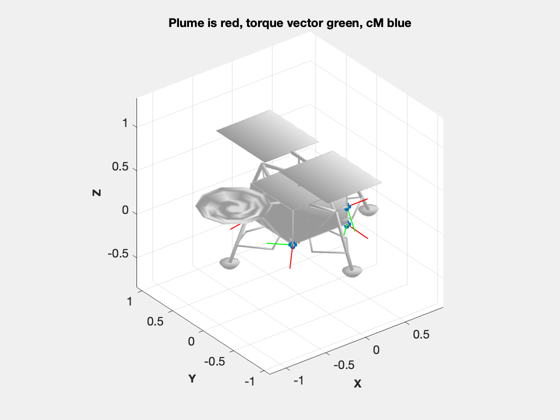

Analyze the thruster layout for the lunar lander
Saves the file LunarRCS.mat to be loaded by other analysis scripts. Loads LunarLander.obj
See also: ThrusterLayout, BDDesign
Contents
%-------------------------------------------------------------------------- % Copyright (c) 2014 Princeton Satellite Systems, Inc. % All rights reserved. %--------------------------------------------------------------------------
Parameters
One u is 10 cm
%----------------- u = 0.1; zBox = 4*u; xBox = 6.8*u; yBox = 6.8*u; thrust = [220 1 1 1 1 1 1]; %N g = 9.806; pressure = 350*6894; uE = 235*g; thrustCoeff = thrust/pressure; fuelMass = 67.63; rhoFuel = 1167.9; %kg/m^3 tNom = 300; pI = 350*6895; pF = 100*6895; rThruster = [ 0 -xBox/2 -xBox/2 xBox/2 xBox/2 xBox/2 xBox/2;... 0 -yBox/2 yBox/2 yBox/2 -yBox/2 yBox/2 -yBox/2;... 0 0 0 0 0 zBox/2 zBox/2]; c = cos(pi/4); s = sin(pi/4); uThruster = Unit([ 0 1 1 -1 -1 -1 -1;... 0 1 -1 -1 1 0 0;... 1 1 1 1 1 0 0]);
Thruster layout and blowdown propulsion design
ThrusterLayout('initialize','LunarLander.obj'); ThrusterLayout('update',uThruster,rThruster); thisD = cd; cd(fileparts(mfilename('fullpath'))); save('LunarRCS.mat', 'rThruster','uThruster'); cd(thisD); [v, mP] = BDDesign( fuelMass, rhoFuel, tNom, pI, pF ); fprintf(1,'\n\n------------- Variable Data for RCS System -------------\n\n'); fprintf(1,'fuelDensity %12.4f\n', rhoFuel); fprintf(1,'fuelPressure %12.4f\n', pI); fprintf(1,'mass %12.4f\n', fuelMass); fprintf(1,'massPressurant %12.4f\n', mP); fprintf(1,'temperatureTank %12.4f\n', tNom); fprintf(1,'volumeTank %12.4f\n', v); fprintf(1,'\n\n------------- Thruster Data for RCS System Setup File -------------\n\n'); for k = 1:size(rThruster,2) fprintf(1,'[%7.2f %7.2f %7.2f %7.2f %7.2f %7.2f %7.2e %7.2f %7.5f %7.4f %7.2f]\n',... rThruster(:,k),uThruster(:,k),thrustCoeff(k),uE,0.02,0.001,1); end %-------------------------------------- % PSS internal file version information %-------------------------------------- % $Id: 702e4f3ad88986e8bf1598b63f512ff2bf856ac0 $
------------- Variable Data for RCS System ------------- fuelDensity 1167.9000 fuelPressure 2413250.0000 mass 67.6300 massPressurant 0.0896 temperatureTank 300.0000 volumeTank 0.0811 ------------- Thruster Data for RCS System Setup File ------------- [ 0.00 0.00 0.00 0.00 0.00 1.00 9.12e-05 2304.41 0.02000 0.0010 1.00] [ -0.34 -0.34 0.00 0.58 0.58 0.58 4.14e-07 2304.41 0.02000 0.0010 1.00] [ -0.34 0.34 0.00 0.58 -0.58 0.58 4.14e-07 2304.41 0.02000 0.0010 1.00] [ 0.34 0.34 0.00 -0.58 -0.58 0.58 4.14e-07 2304.41 0.02000 0.0010 1.00] [ 0.34 -0.34 0.00 -0.58 0.58 0.58 4.14e-07 2304.41 0.02000 0.0010 1.00] [ 0.34 0.34 0.20 -1.00 0.00 0.00 4.14e-07 2304.41 0.02000 0.0010 1.00] [ 0.34 -0.34 0.20 -1.00 0.00 0.00 4.14e-07 2304.41 0.02000 0.0010 1.00]